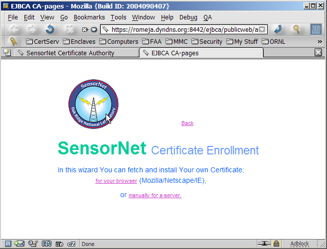
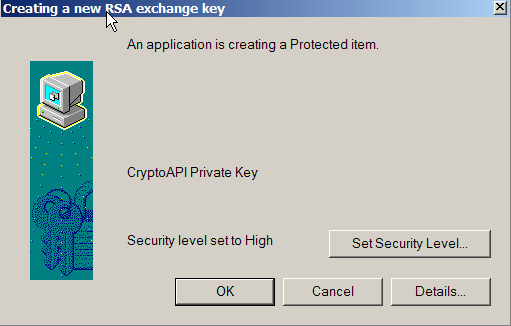
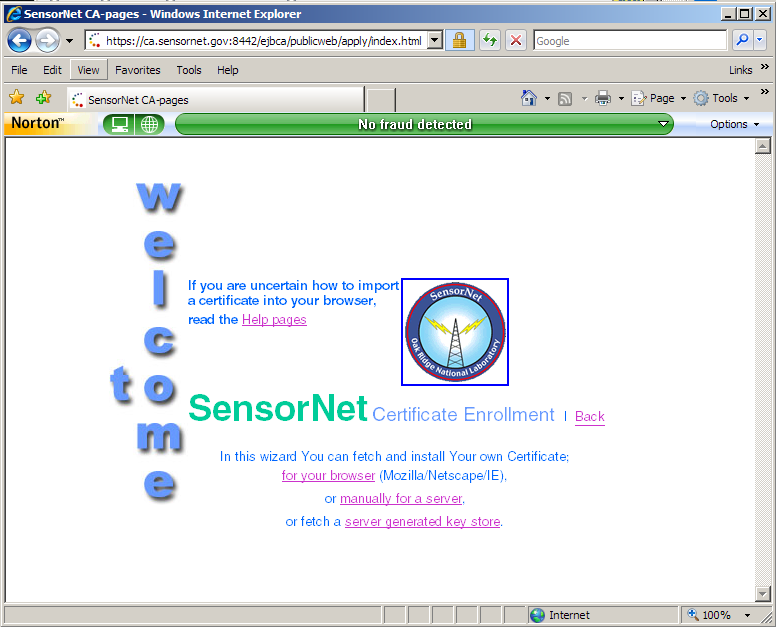
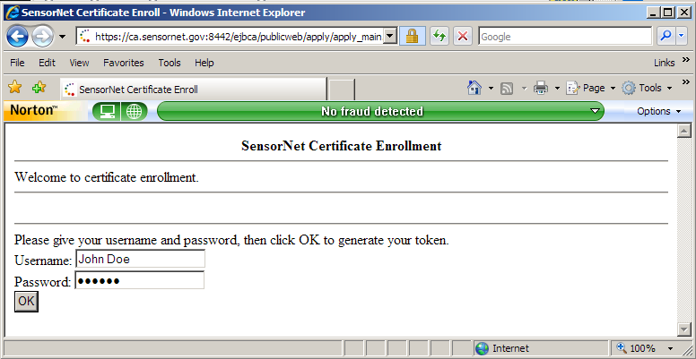
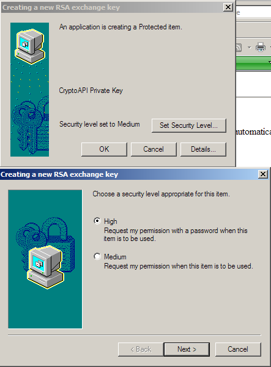
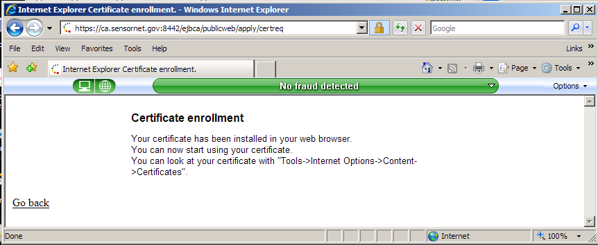

SensorNet Public/Private Key Certificate Infrastructure |
|
November 2006 |
|
Introduction |
| We all agree on the need for security. However, there are many ways to achieve different levels of security. The purpose of this Web page is to outline the needs of SensorNet, to explain how certificates meet these needs, and to guide you through the certificate issuing and use process. |
Contents |
Why are certificates the best SensorNet security solution? |
What are the threats? |
| The general threats to security
are well known, but we reiterate them here because it is necessary to
keep them in mind when proposing a security solution.
|
| Because SensorNet is a vital
component of Homeland Security, it is necessary to implement a viable
security solution that provides strong proof of identity and contains
the encryption tools and information necessary to provide protection
from most of these threats. SensorNet has decided to implement a
Public/Private Key Certificate infrastructure. Initially this will be
done via software, but soon will be converted to hardware-based tokens.
This Public Key Infrastructure (PKI) has several advantages: |
| Flexibility The security system should be able to protect all of our resources as well as implementing security policies that are more sophisticated than mere file-access restrictions. |
| User
friendliness Using a system with good security should be about as easy as using one without security. |
| Scalability Solutions should scale well as more facilities or users are added to SensorNet |
| Uniformity The solutions should look the same (but may have differing properties) across SensorNet |
| Collaboration Things that encourage the collaboratory aspects of SensorNet should be encouraged. |
| Conformance
to standards PKI is a mature tool set supported on all platforms in an interchangeable manner. |
A short course on certificates |
Identity certificates |
Currently there are three
certificates involved in each secure Web transaction.
|
| In principal, there is a root CA
certificate that is self signed and that everyone trusts. If the root
CA certificate is compromised, the whole certificate structure falls
apart. It is perhaps a philosophical issue, but the original goal of a
certificate authority hierarchy, which would allow each certificate to
be traced up to the root CA, was never established because the notion
of an identity does not scale well. In a small community, everyone
knows everyone else so the binding of a name to an identity is not
difficult. However, if your friend John Smith moved to New York City,
it will be very difficult to know which John Smith in the telephone
book is your friend. Fortunately, the SensorNet community is smaller
and most users will have government-issued credentials to vouch for
their identities, so we can be confident of identities. For SensorNet,
less formal measures are called for. SensorNet is its own root CA and
has self signed the SensorNetCA certificate (in the name of SensorNet).
Due care is taken to keep the CA computer backed up and locked up in a
secure location. This is the correct thing to do because for our
purposes, we trust ourselves more than we trust an external CA such as
VeriSign. |
| The format for identity
certificates is spelled out in the PKI (public key infrastructure)
specifications called X.509. Currently, the certificates we issue
correspond to the latest, version 3 specification. These certificates
bind an identity in the real world to a public key. For our purposes,
our unique identity is specified by what is called a distinguished name
(DN) which is composed of a person's real name, country, organization,
organizational unit, city, state, and e-mail address. However, since
certificates can also be issued to computers and other non-human
entities, the notion of an identity is actually broader and fuzzier
than might be ideal. An X.509v3 certificate allows a certificate holder
to create a digital signature, to use the keys for encryption, to
create S/MIME e-mail, and to sign trusted objects (e.g., Active-X
controls). These privileges are actually delegated separately by
different bits in the certificate's extensions. The contents of my
SensorNet certificate show that I can use my certificate as an SSL
client, for secure E-mail, and for object signing. |
Uses of identity certificates |
| Once you have an identity
certificate, what good is it? Here are some of the things you can do
with your certificate: |
| Secure Web access Identity certificates allow user-friendly, secure access to a Web site with strong authentication. Modern Web servers (Netscape, IIS, Apache) can all be set up to require client certificates for site access. Out of the box, it is trivial to configure the server to accept only SensorNet certificates, so that anyone with a valid SensorNet certificate will be authenticated securely and can use SSL for secure access. No user ids and passwords are required. However, once per browser session, the user will have to unlock his private certificate key with a local password. The SensorNet CA web site is set up this way on a Tomcat server. To access this server, go to [link removed]. |
| Access to a site can also be
controlled by using "basic" authentication — user ids and passwords.
There are several problems with this approach. The biggest problem is that this solution does not scale well. If a new user is added and we used basic authentication, we would have to enroll the user separately at each server. Then there is the problem of allowing the user to securely set his password on each of these machines, especially if you do not want to give the user a login account on the machine (an invitation to a security breach). With SensorNet issued certificates, new users are automatically granted access to all SensorNet sites requiring certificates for access. |
| Passwords also present several security problems. If the host computer gets hacked, the (hashed) password file may become compromised (thus allowing offline brute force attacks) requiring that all users get new passwords. This has proved to be a logistical problem. Passwords can be easily sniffed if the user's computer gets hacked, and good passwords are hard to remember and thus get written down on sticky notes attached to the computer for all to see. There is also generally no restriction to the number of times that a password-based Web access pop up can fail (or else there could be easy denial of service attacks). Therefore, access via user id and password is subject to password guessing attacks. |
| Digital signatures Client certificates allow users to sign things, solving the authenticity security requirement. It is very easy to spoof E-mail, so it is good practice to sign all electronic communications. The PGP community has been routinely signing all their mail for years, but I feel that the X.509 solution scales better and more user friendly than PGP. |
| PGP uses identity certificates
also. However, PGP certificates are not signed by a CA. They are signed
by your friends and acquaintances, or other people who vouch for your
identity. This is called the "web of trust" model. X.509 certificates
are signed by a CA that presumably you trust. There is much less
baggage associated with X.509 because you do not have to go to key
signing parties to get your PKI key well validated -- That is the
function of the CA. |
| Cyber identity Your public key is your cyber identity. It can be used in other contexts to grant you authority to do things. The concept of authority certificates is the basis for the SPKI (simple public key infrastructure) that is currently in an IETF draft. See http://theworld.com/~cme/html/spki.html. Provided that you can access your private key to unlock your certificate (to prevent spoofing), extremely complicated security policies can be implemented using a collection of authorization certificates. |
| S/MIME e-mail S/MIME is a specification for secure electronic messaging. In 1995, several software vendors got together and created S/MIME to solve a very real problem -- interception and forgery of e-mail. Protecting sensitive data is a real concern, especially in a world that is becoming increasingly more wired. The goal of S/MIME is to make it easy to secure messages from prying eyes. Since its creation, S/MIME has come a long way. Most mail clients support S/MIME encrypted and signed e-mail. All of the major industry players have also agreed to support the S/MIME standard. Again, sending secure e-mail is like practicing safe sex — you need to do it. Yes, not everything you send needs to be encrypted. However, it is very easy to intercept e-mail and to modify it. A malicious entity can put damaging words into your innocent e-mail. In today's world, security by obscurity does not work any more. |
| Object signing To combat the threat of computer viruses, executable code is now being signed to prove its authenticity and integrity. Java applets and Active-X controls are examples of the types of things that should be signed. If we create code that runs on a user's machine, it should be signed for both the user's peace of mind and for our legal protection. Various PKI tools allows you to use SensorNet Client Certificates for code signing. |
Certificate Authority
enrollment
|
| Certificate authorities create,
verify, renew, revoke, and reissue certificates. We are now using the
Enterprise Java Bean Certificate Authority (EJBCA) via a secure (https)
SSL connection. You may access the SensorNet Certificate Server at [link removed]. |
| Because we wish to tightly
control who gets a SensorNet certificate, you will receive an
invitation to get a SensorNet certificate. This will come by e-mail or
surface mail. It is vital that you
import your certificate on a properly secured computer.
This means up-to date security patches, anti-virus, and anti-pest
programs. Otherwise, your private key will be at risk, and security
will be compromised. We strongly recommend that you use Mozilla,
Firefox, or Netscape 7.x because they handle certificates much better
than Internet Explorer and have many fewer security holes.
|
| Certificate Import for Netscape/Mozilla/Firefox |
| Open the URL in your mail
message to see the screen in Figure 1. |
|  Figure 1. |
| Click the "for your browser" link and enter the
username and password that were in your e-mail (Figure 2), and click OK to generate your key pair. |
 Figure 2. |
 Figure 3. |
| When the key generation is
finished, in Mozilla/Netscape, you are done. Do not press the OK Button a second time! Mozilla
may ask you to create a password to protect your key store. Choose a
good password (at least 8 characters containing letters, numbers,
special characters and no dictionary words) and remember it. You will
have to supply this password whenever the certificate is used. Mozilla
uses this same password to protect other sensitive information you ask
the browser to save, such as site passwords. Now learn to manage your
certificates in Mozilla.
|
| Certificate
Import for Internet Explorer 6 |
| If you used Internet Explorer 6
(IE6), the situation is different (Figure 4). Be sure to choose the
Microsoft enhanced Cryptographic Provider v1.0 in the drop-down box.
When you click OK, the "Creating a new RSA exchange key" pop-up will
appear. It is essential that you
press the "Set Security Level" button. Otherwise, your private
key will not be protected by a password. Be sure to choose the High
security level. |
 Figure
4.
|
| You will then be asked for a
password to protect your certificate and then make sure that the "Creating a new Exchange key" dialog
shows that the protection level is set to High (Figure 5). If you have XP
Service Pack 2, several warning pop-ups may appear about allowing
untrusted sites to install certificates. You trust us, so check OK if they appear. |
|  Figure 5. |
| The import process is now
complete (Figure 6). |
 Figure 6. |
| Certificate Import for Internet Explorer 7 |
| The certificate import process has changed for Internet Explorer version 7 (IE7). Open the URL in the e-mail message and you will see the screen in Fig. 7. |
 Figure 7 |
| Choose the for your browser link and you will see Fig. 8. Enter your user name and password (from the e-mail) and click OK. |
 Figure 8 |
| You will then get numerous warnings about allowing Active-X controls, running add-ons, and resending the page contents (Fig. 9). Click OK for Active-X, Retry to redisplay the page, and click the yellow top panel to run the Microsoft Certificate Enrollment Control. |
Figure 9 |
| The Web page (Fig. 10) then allows you to select the key size in the certificate. Choose 2048 or higher if you can do so. Click OK to start the certificate generation process. |
Figure 10 |
| Ignore the warning about a potential scripting violation (Fig. 11). Click yes to accept the certificate. |
 |
| Now (very important!) be sure to set the security level to high (Fig 12) by clicking the Set Security Level button. |
 Figure 12 |
| When you set the security level to High, you will be asked for a password to protect your certificate (Fig. 13). Be sure to remember it. |
Figure 13 |
You will then get a popup saying that the certificate was imported, and the Browser page will tell you where to go to see it (Fig. 14). |
 |
 Figure 14 |
| Navigate in the browser to look at your certificate. You will see your client certificate store as shown in Fig. 15. |
Figure 15 |
| Select your certificate and click the Advanced button. Be sure that the Client Authentication usage is checked as shown in Figure 16. Then export your certificate as described in the next section. |
Figure 16 |
Managing certificates |
| Obtaining a certificate is just
the first step in the process of using a digital certificate. They must
also be managed. This means |
|
| The management procedure is
different, depending upon your platform. |
|
|
Using certificates for secure e-mail |
| In order to use your
certificates to send and receive secure e-mail using S/MIME, you will
have to attach to the SensorNet LDAP browser so that you can obtain a
certificate for the recipients. This is much easier using the mail
client in Mozilla/Netscape or the stand-alone Thunderbird, than it is
with Outlook or with Outlook Express. If you are going to do
secure e-mail, our recommendation is that you use Mozilla/Netscape. We
provide separate instructions for each platform. |
|
|